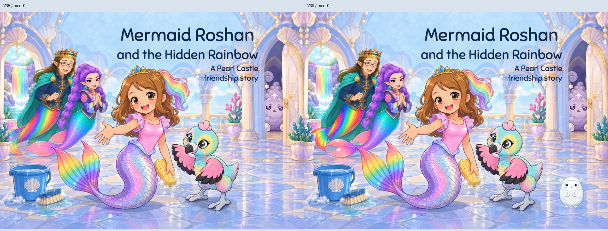
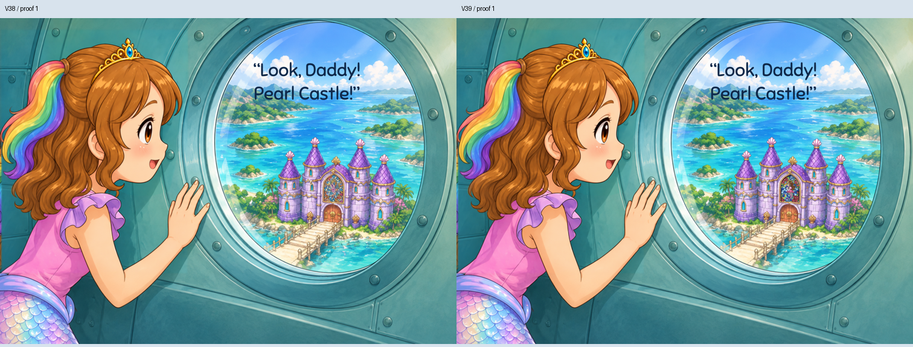
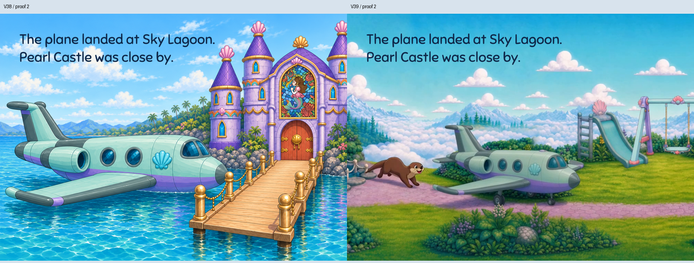
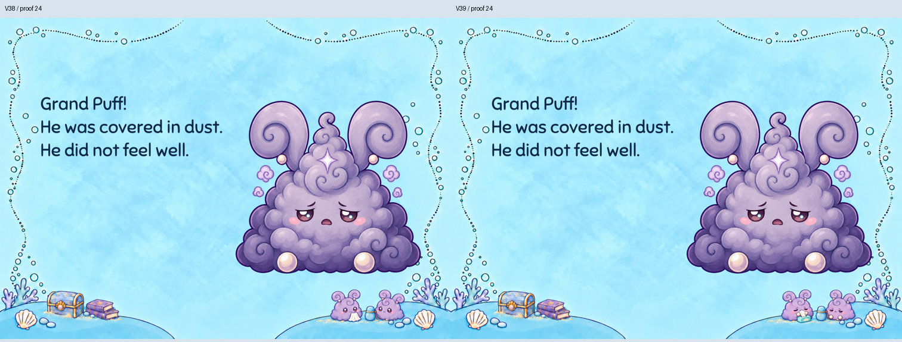
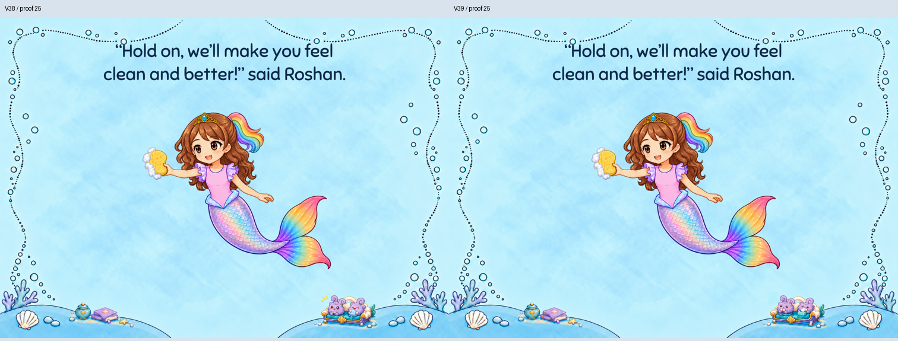

Five named proofs changed;29proofs remain byte-identical. Owner PDF pages2/3 are story1/2. Eight native generation calls, five selected local repairs. Existing sources supply Lamma, stained glass and demo landing. A9 and native demo print-resolution holds remain explicit.
Read book · Email PDF · Five visual passes · Independent critique · Machine evidence
Daddy rainbow tail and Rumi pink caudal fin repaired within declared polygons; existing painted Lamma first atlas frame added on floor with existing restrained contact shadow. Old surrounding art and original title/subtitle retained.

Exact Roshan stained-glass portrait reused from approved castle artwork within the existing gold arch; window and scene retained.

Exact owner-directed demo frame408 at17s: plane on wheels beside playground slide/swings, not a water landing. Native1280x720 source with declared7:5 crop; final print resolution remains open.

Same two little puffs/ears/bank/flask: gently unwell expressions and aqua pop-up tissue box. No cloth-only care cue.

Same two little puffs/sofa: unwell faces and tissue box; old handkerchief and cheer marks removed.
